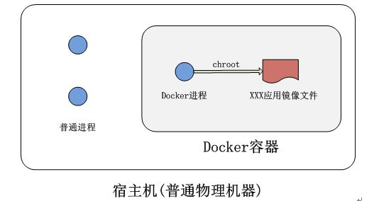

Docker的优势
- 更高效的利用系统资源，容器不需要进行硬件虚拟以及运行完整操作系统等额外开销
- 更快速的启动时间，传统的虚拟机技术启动应用服务往往需要数分钟， Docker容器应用可以做到秒级、甚至毫秒级的启动时间
- 更轻松的迁移，由于 Docker 确保了执行环境的一致性，使得应用的迁移更加容易
- 更轻松的维护和扩展，Docker 使用的分层存储以及镜像的技术，使得应用重复部分的复用更为容易，也使得应用的维护更新更加简单，基于基础镜像进一步扩展镜像也变得非常简单。
对比传统虚拟机总结
| 特性 |
容器 |
虚拟机 |
| 启动 |
秒级 |
分钟级别 |
| 硬盘使用 |
一般以MB为单位 |
一般以GB为单位 |
| 性能 |
接近原生 |
弱于 |
| 系统支持量 |
单机支持上千个容器 |
一般几十个 |
容器&镜像&仓库&Docker daemon &Docker client
- 容器的实质是进程，相对于系统的普通进程，容器应用的文件系统，网络配置，进程空间都是运行在一个隔离的环境，如下图所示

- 镜像相对于容器就像二进制程序和二进制程序运行的进程类似，镜像是静态的定义，容器是运行的实体
- 仓库就是存储一个软件不同版本的镜像，用标签来标签来标识，例如ubuntu这个镜像，有两个版本，分别就表示为ubuntu:14.04，ubuntu:16.04 ，：后面就是镜像的标签
- Docker daemon就是用来管理容器运行和镜像的平台，用来运行，停止，删除容器。更新升级容器的镜像
- Docker client就是用来操作Docker平台的入口，通过Docker client的pull start stop等指令来操作管理Docker平台的容器和镜像
- 关系如下图

DockerFile
- Dockfile是一种被Docker程序解释的脚本，Dockerfile由一条一条的指令组成，每条指令对应Linux下面的一条命令。Docker程序将这些Dockerfile指令翻译真正的Linux命令。
- Dockerfile的指令是忽略大小写的，建议使用大写，使用#作为注释，每一行只支持一条指令，每条指令可以携带多个参数。
- Dockerfile的指令根据作用可以分为两种，构建指令和设置指令。构建指令用于构建image，其指定的操作不会在运行image的容器上执行；设置指令用于设置image的属性，其指定的操作将在运行image的容器中执行。

1 制作镜像环境
- 在linux操作系统中创建一个文件夹专门用于制作镜像
mkdir docker_build
- 创建一个名为Dockerile的文件，这个文件用来编写Dockfile
touch Dockerfile
2 FROM(指定基础image)
- 必须指定且需要在Dockerfile其他指令的前面。后续的指令都依赖于该指令指定的image。FROM指令指定的基础image可以是官方远程仓库中的，也可以位于本地仓库。
- 该指令有两种格式
- 指定基础image为该image的最后修改的版本
FROM <image>
- 或者指定基础image为该image的一个tag版本。
FROM <image>:<tag>
3 MAINTAINER（用来指定镜像创建者信息）
- 构建指令，用于将image的制作者相关的信息写入到image中。当我们对该image执行docker inspect命令时，输出中有相应的字段记录该信息。
MAINTAINER <name>
4 RUN(安装软件用)
- 构建指令，RUN可以运行任何被基础image支持的命令。如基础image选择了ubuntu的linux发行版，那么软件管理部分只能使用ubuntu的命令。如果选择了centos的linux发行版，软件管理部门只能使用centos的系统指令
- RUN命令将在当前构建的image中执行任意合法命令并提交执行结果。命令执行提交后，就会自动执行Dockerfile中的下一个指令。相当于在操作系统中执行安装软件的操作，RUN就是在镜像中安装了一些软件，这些镜像运行起来成为容器后就可以使用这些软件。
- RUN 命令可以多个命令合并成一行。
FROM debian:jessie
RUN buildDeps='gcc libc6-dev make' \
&& apt-get update \
&& apt-get install -y $buildDeps \
&& wget -O redis.tar.gz "http://download.redis.io/releases/redis-3.2.5.tar.gz" \
&& mkdir -p /usr/src/redis \
&& tar -xzf redis.tar.gz -C /usr/src/redis --strip-components=1 \
&& make -C /usr/src/redis \
&& make -C /usr/src/redis install \
&& rm -rf /var/lib/apt/lists/* \
&& rm redis.tar.gz \
&& rm -r /usr/src/redis \
&& apt-get purge -y --auto-remove $buildDeps
5 COPY
- 将一些应用程序所需要的第三方程序和插件，拷贝进制作的docker镜像的容器中
COPY file /docker_image_dir
- 使用 COPY 指令，源文件的各种元数据都会保留。比如读、写、执行权限、文件变更时间等, 可以通过--chown来改变用户和属组属性
COPY --chown=55:mygroup files* /mydir/
COPY --chown=bin files* /mydir/
COPY --chown=1 files* /mydir/
COPY --chown=10:11 files* /mydir/
6 ADD(从src复制文件到container的dest路径)
- 构建镜像的时候，需要一些辅助的文件和库来支撑应用程序的运行，就是通常所说的程序运行所依赖的第三方库或者文件。这些文件需要从构建镜像的宿主机器的目录中拷贝进容器镜像
ADD host/dir/file image/dir
7 WORKDIR(切换目录)
- 设置指令，可以多次切换(相当于cd命令)，对RUN,CMD,ENTRYPOINT生效。
WORKDIR /path/to/workdir
8 EXPOSE(指定容器需要映射到宿主机器的端口)
- 相当于服务启动时监听的端口，通过该端口，客户端就可以服务绑定的IP和端口进行调用访问
EXPOSE Port
9 VOLUME(指定挂载点)
- Volume设置指令，使容器中的一个目录具有持久化存储数据的功能，该目录可以被容器本身使用，也可以共享给其他容器使用。我们知道容器使用的是AUFS，这种文件系统不能持久化数据，当容器关闭后，所有的更改都会丢失。当容器中的应用有持久化数据的需求时可以在Dockerfile中使用该指令。
VOLUME ["<mountpoint>"]
示例相当于cd /p1/p2目录中，然后编辑a.txt文件
WORKDIR /p1
WORKDIR p2
RUN vim a.txt
10 CMD(设置container启动时执行的操作)
- 设置指令，用于container启动时指定的操作。该操作可以是执行自定义脚本，也可以是执行系统命令。容器启动时需要启动安装在容器中的应用程序，通过CMD命令可以启动自己的应用程序
- 例子中就会先执行docker-entrypoint.sh，然后执行服务启动命令
<ENTRYPOINT> "<CMD>"
ENTRYPOINT ["docker-entrypoint.sh"]
CMD [ "sh" "-c", "start.sh start" ]
11 ENV(用于设置环境变量)
- 设置容器内部的全局环境变量
- 可以进行后期定制升级操作
- 下面例子可以看出，后期如果需要升级和变动，只需要修改NODE_VERSION就可以了
ENV NODE_VERSION 7.2.0
RUN curl -SLO "https://nodejs.org/dist/v$NODE_VERSION/node-v$NODE_VERSION-linux-x64.tar.xz" \
&& curl -SLO "https://nodejs.org/dist/v$NODE_VERSION/
开始构建镜像
- 经过上面11个步骤之后，一个Dockerfile文件就写好，下面就是在Dockerfile文件所在的目录下执行命令来构建镜像，命令如下
docker build -t image_name:version .
示例
sudo docker build -t nginx:v1 .

- 执行到Successfully built表示镜像已经构建成功